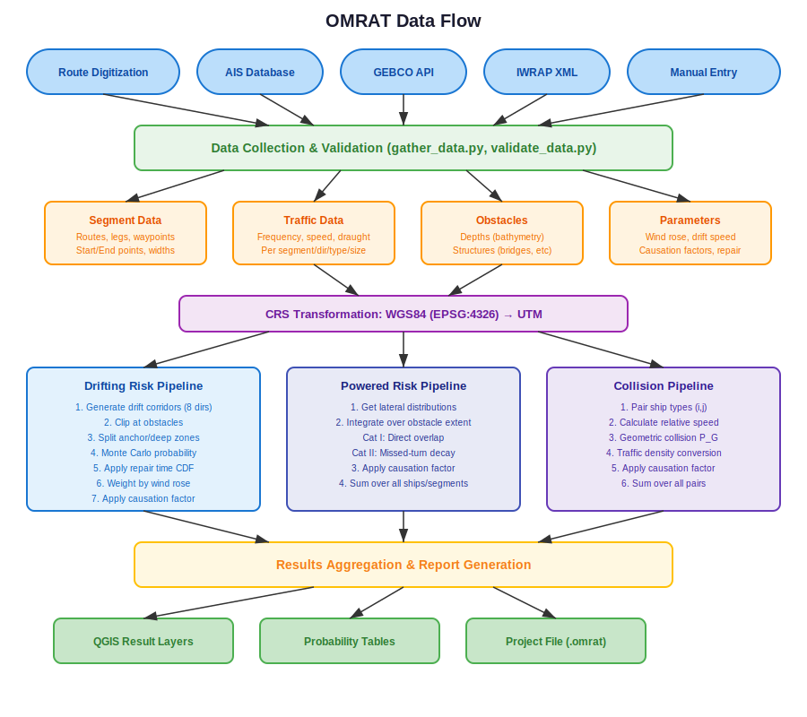

Code Architecture¶
This chapter describes the internal architecture of OMRAT, including the module structure, class hierarchy, and data flow between components.
Directory Structure¶
OMRAT/
├── omrat.py # Main plugin class (entry point)
├── omrat_widget.py # Main UI dock widget
├── __init__.py # Plugin initialisation (classFactory)
│
├── compute/ # Risk calculation engine
│ ├── basic_equations.py # Core mathematical formulas
│ ├── run_calculations.py # Calculation orchestration
│ ├── calculation_task.py # QgsTask wrapper for background exec
│ ├── database.py # PostgreSQL/PostGIS connector
│ └── iwrap_convertion.py # IWRAP XML import/export
│
├── geometries/ # Spatial geometry operations
│ ├── handle_qgis_iface.py # Route digitisation & layer mgmt
│ ├── route.py # Route processing utilities
│ ├── drift_corridor_v2.py # Drift corridor API (re-exports)
│ ├── drift_corridor_task_v2.py # Background corridor generation
│ ├── get_drifting_overlap.py # Overlap visualisation
│ ├── calculate_probability_holes.py # Monte Carlo integration
│ ├── result_layers.py # Result QGIS layer creation
│ └── drift/ # Refactored drift submodule
│ ├── constants.py # Direction constants (N,NE,E,...)
│ ├── coordinates.py # CRS transformations
│ ├── distribution.py # Width & projection distance
│ ├── corridor.py # Base surface & projected corridor
│ ├── shadow.py # Obstacle blocking zones
│ ├── clipping.py # Corridor clipping & anchor split
│ ├── generator.py # Main corridor generator (~800 lines)
│ └── probability_integration.py # Probability hole integration
│
├── omrat_utils/ # Data management utilities
│ ├── handle_traffic.py # Traffic table management
│ ├── handle_object.py # Depth & structure management
│ ├── handle_ais.py # AIS database integration
│ ├── handle_distributions.py # Lateral distribution modelling
│ ├── handle_settings.py # Drift parameter configuration
│ ├── handle_ship_cat.py # Ship type classifications
│ ├── causation_factors.py # Causation factor management
│ ├── gather_data.py # Data serialisation/deserialisation
│ ├── storage.py # Project file I/O (.omrat JSON)
│ ├── validate_data.py # Pydantic validation schemas
│ ├── repair_time.py # Repair time distribution
│ └── units.py # Unit conversion utilities
│
├── ui/ # User interface widgets
│ ├── drift_settings_widget.py
│ ├── traffic_data_widget.py
│ ├── ship_categories_widget.py
│ ├── ais_connection_widget.py
│ ├── causation_factor_widget.py
│ ├── result_widget.py
│ └── show_geom_res.py
│
├── helpers/ # Helper utilities
│ └── qt_conversions.py # Qt5/Qt6 compatibility
│
├── tests/ # Test suite
└── help/ # Documentation (Sphinx)
Data Flow¶
The following diagram shows how data flows through OMRAT from input to output:
{kind=link}
The data flow can be summarised in five phases:
Input: Routes are digitised on the map, traffic data is entered or imported from AIS, obstacles are loaded from shapefiles or GEBCO.
Collection:
gather_data.pyaggregates all data into a single dictionary for calculation and persistence.Transformation: Geometries are transformed from WGS84 to UTM for accurate distance-based calculations.
Calculation: Three parallel pipelines compute drifting risk, powered risk, and collision risk.
Output: Results are visualised as QGIS layers and stored in the project file.
Key Classes¶
OMRAT (omrat.py)¶
The main plugin class. It owns all other components and orchestrates the plugin lifecycle:
Initialisation: Creates instances of all manager classes (Traffic, OObject, DriftSettings, etc.)
Signal management: Connects UI buttons to handler methods
Calculation dispatch: Creates
CalculationTaskorDriftCorridorTaskinstances for background executionMenu/toolbar: Registers QGIS menu items and toolbar buttons
omrat.py – OMRAT (main plugin entry point)
OMRATMainWidget (omrat_widget.py)¶
The Qt dock widget that provides the user interface. It is built from
omrat_base.ui (Qt Designer file) and contains:
Route tab: Route table, digitisation buttons
Traffic tab: Ship frequency/speed/dimension tables
Depths tab: Depth polygon management, GEBCO download
Objects tab: Structure polygon management
Distributions tab: Lateral distribution configuration and plots
Results tab: Calculation results display
Drift Analysis tab: Corridor generation controls
Calculation (compute/run_calculations.py)¶
The main calculation engine. Key responsibilities:
run_drifting_model(data): Computes drifting grounding/allision probabilities using Monte Carlo integrationrun_ship_collision_model(data): Computes ship-ship collision frequenciesrun_powered_grounding_model(data): Computes powered grounding (Category I and II)run_powered_allision_model(data): Computes powered allisionrun_drift_visualization(data): Creates visual corridor layers
compute/run_calculations.py:44 – Calculation (mixin-based facade) |
Mixins: DriftingModelMixin,
ShipCollisionModelMixin,
PoweredModelMixin,
DriftingReportMixin,
VisualizationMixin
DriftCorridorGenerator (geometries/drift/generator.py)¶
Orchestrates drift corridor generation for all legs and directions:
precollect_data(): Gathers UI data in the main thread (required because Qt widgets are thread-unsafe)generate_corridors(): Generates corridors in a background thread_create_single_corridor(): Creates one corridor for one leg in one direction
geometries/drift/generator.py:25 – DriftCorridorGenerator |
geometries/drift/generator.py:65 – precollect_data() |
geometries/drift/generator.py:360 – generate_corridors() |
geometries/drift/generator.py:516 – _create_single_corridor()
HandleQGISIface (geometries/handle_qgis_iface.py)¶
Manages QGIS layer operations for route digitisation:
Route creation via map click tool
Segment data tracking (start/end points, directions, widths)
Visual offset lines showing route width
Geometry change detection for interactive editing
geometries/handle_qgis_iface.py – HandleQGISIface
Data Structures¶
Traffic Data¶
Traffic data is stored in a nested dictionary:
traffic_data[segment_id][direction] = {
'Frequency (ships/year)': [[int, ...], ...], # [type][size]
'Speed (knots)': [[float, ...], ...],
'Draught (meters)': [[float, ...], ...],
'Ship heights (meters)': [[float, ...], ...],
'Ship Beam (meters)': [[float, ...], ...],
}
Each value is a 2D array indexed by [ship_type_index][ship_size_index].
Segment Data¶
segment_data[segment_id] = {
'Start_Point': str, # WKT point
'End_Point': str, # WKT point
'Dirs': [str, str], # Direction labels
'Width': float, # Lane width (m)
'line_length': float, # Segment length (m)
'Route_Id': int,
'Leg_name': str,
'Segment_Id': int,
# Distribution parameters:
'mean1_1': float, 'std1_1': float, 'weight1_1': float,
'mean1_2': float, 'std1_2': float, 'weight1_2': float,
'mean1_3': float, 'std1_3': float, 'weight1_3': float,
'u_min1': float, 'u_max1': float, 'u_p1': float,
# ... same for direction 2 ...
}
Drift Values¶
drift_values = {
'drift_p': float, # Blackout frequency
'anchor_p': float, # Anchor probability
'anchor_d': float, # Max anchorable depth (m)
'speed': float, # Drift speed (m/s)
'rose': { # Wind rose probabilities
'0': float, # North
'45': float, # NorthWest
'90': float, # West
'135': float, # SouthWest
'180': float, # South
'225': float, # SouthEast
'270': float, # East
'315': float, # NorthEast
},
'repair': {
'func': str, # Custom function expression
'std': float, # Lognormal shape
'loc': float, # Location parameter
'scale': float, # Scale parameter
'use_lognormal': bool, # Use lognormal or custom
}
}
Background Task Execution¶
OMRAT uses QGIS’s QgsTask system for long-running calculations.
This keeps the UI responsive while computations run in background
threads.
CalculationTask¶
Wraps the full risk calculation pipeline:
run_drifting_model()– probability holes (60% of time)run_ship_collision_model()– collision frequencies (fast)run_powered_grounding_model()– powered groundingrun_powered_allision_model()– powered allision
Signals emitted: progress_updated, calculation_finished,
calculation_failed.
compute/calculation_task.py – CalculationTask
DriftCorridorTask¶
Wraps the drift corridor generation:
precollect_data()runs in the main thread (before task starts)generate_corridors()runs in the background threadLayer creation runs in the main thread (via
finished()signal)
Signals emitted: progress_updated, corridors_generated,
generation_failed.
geometries/drift_corridor_task_v2.py – DriftCorridorTask
IWRAP Integration¶
OMRAT supports bidirectional conversion with IWRAP XML format:
Export (write_iwrap_xml):
Gather project data via
GatherDataBuild XML tree with waypoints, legs, traffic distributions, obstacles
Write formatted XML file
Import (parse_iwrap_xml):
Parse XML tree structure
Extract waypoints, legs, traffic, causation factors
Map to OMRAT’s internal data format
Validate with Pydantic schema
Populate UI via
GatherData.populate()
The conversion handles differences in data model between IWRAP and OMRAT, including coordinate format, traffic representation, and distribution parameters.
compute/iwrap_convertion.py – IWRAP conversion module
Project Persistence¶
Projects are saved as .omrat files (JSON format):
{
"project_name": "My Analysis",
"pc": {"p_pc": 1.6e-4, "d_pc": 1.0},
"drift": {
"drift_p": 1, "anchor_p": 0.95, "anchor_d": 7,
"speed": 1.944, "rose": {...}, "repair": {...}
},
"traffic_data": {...},
"segment_data": {...},
"depths": [[id, depth, wkt], ...],
"objects": [[id, height, wkt], ...],
"ship_categories": {...}
}
The validate_data.py module defines a Pydantic schema
(RootModelSchema) that validates the structure on save and load.
Legacy format conversion is handled by Storage._normalize_legacy_to_schema().
omrat_utils/storage.py – Storage |
omrat_utils/validate_data.py – Validation schemas